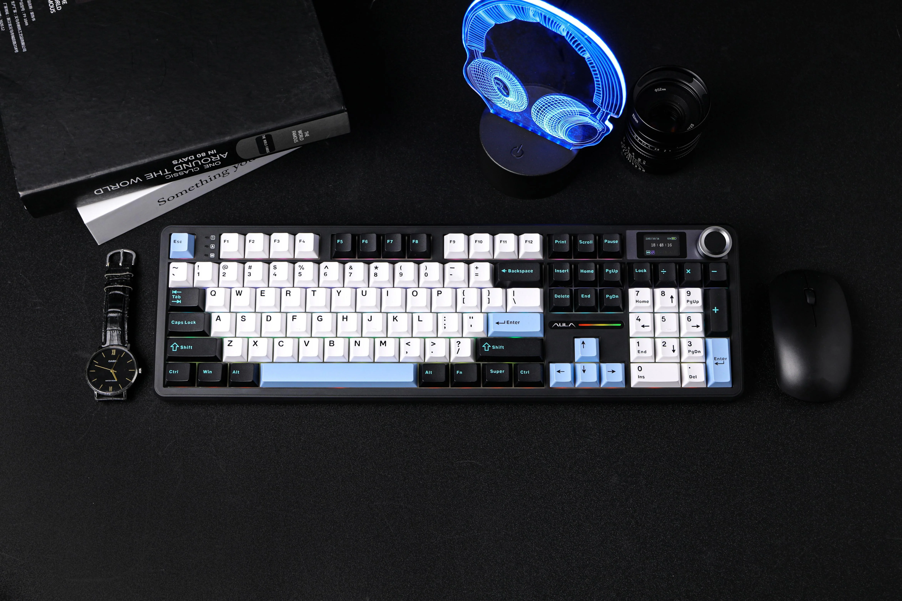
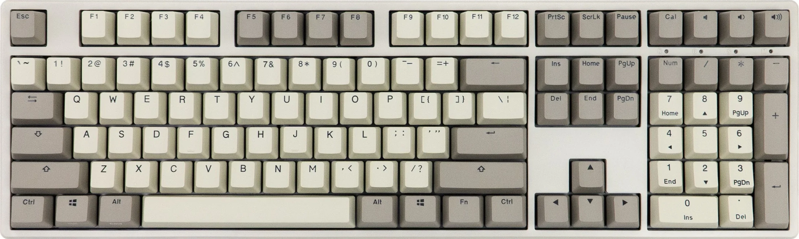
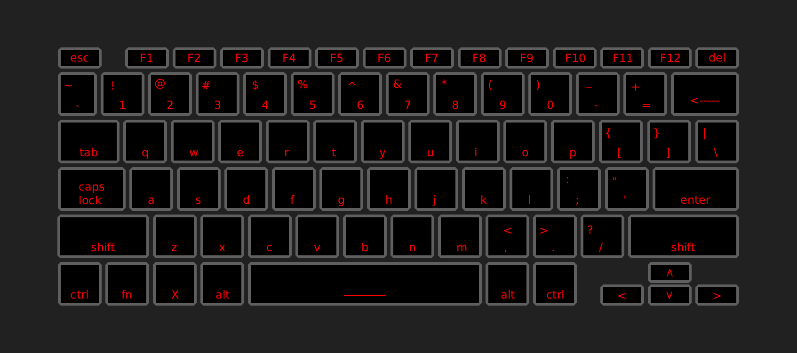
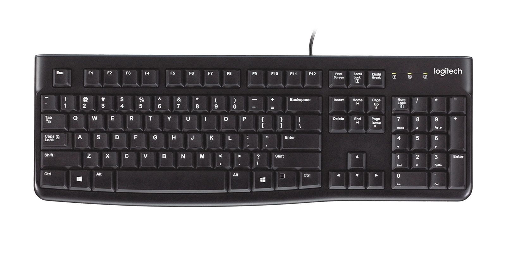
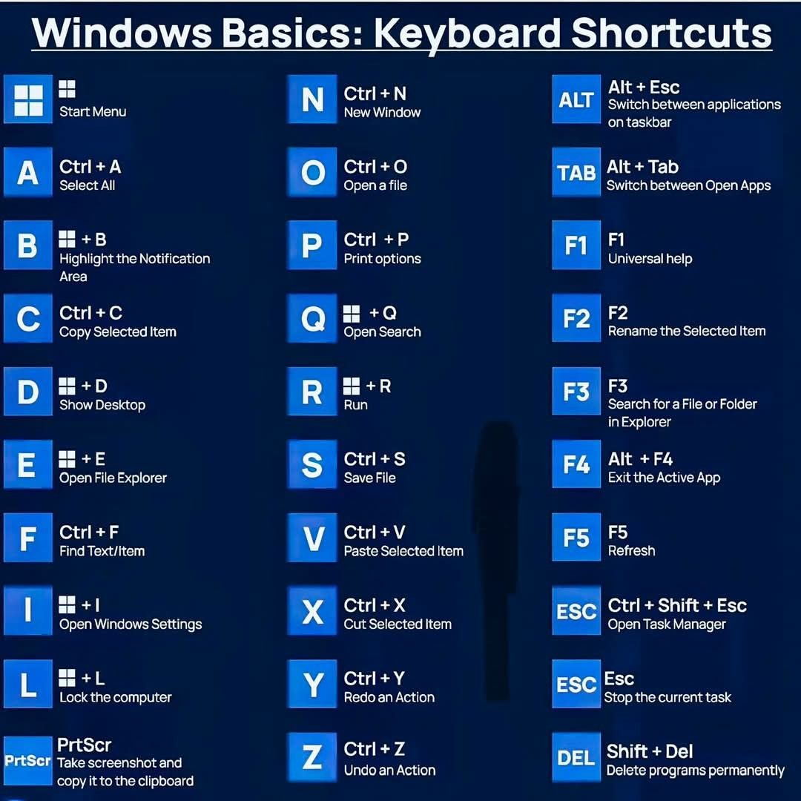

The Modern Keyboard
The most important tool in the modern age
About The Computer Keyboard

The computer keyboard is the primary input device used in modern computers. It allows direct control of the computer by pressing the keyboard buttons. It is used in every part of the computer, from searching the internet to writing a paper; the keyboard is at the heart of it all. On this website, you will learn how to develop a proper understanding of your keyboard.
Additional details and context about them will be found below in the detailed sections.
User Guide
Follow these step-by-step instructions to use a keyboard:
Step 1: Getting Started

The first step to using your keyboard is to observe and understand the layout of the keyboard, noticing specifically what is called the ‘home row’ keys, (A, S, D, F for the left hand and J, K, L, ; for the right hand) using your pinky through pointer finger, with both thumbs resting near the space bar (the largest key on the keyboard). To prevent strain from extended use, straighten your wrist and curl your fingers while hovering over the keys.
Step 2: Main Operation

To begin using the keyboard, ensure you are within the area you wish to type in, press the key that has the same character you desire to input, and the key will appear on the screen. The other three primary keys are backspace, tab, and enter. The backspace is the primary way to delete the characters you have already typed, removing what is left of the cursor when pressed. Tab is for adding larger gaps near the beginning of paragraphs or other areas where a large gap is needed. Enter adds a new line after the cursor.
Step 3: Advanced Features

Many keys have multiple functions, depending on which modifier key is used. Modification keys include shift, control (Ctrl), and Alternative (Alt); these keys change which character is entered when a key is pressed or which command is issued to the keyboard. To use a modification key, press and hold the mod key while pressing the desired primary key. The most common one is shift. Shift will perform two main actions depending on the key: for letters, it will input the capital version of the letter; for any other key that looks like it has two characters on one key, it will input the alternative. The next modifier key is control, the primary purpose of which is to manipulate data: move from one place to another, undo an action, or select all of something. A common use of Ctrl is Ctrl + Backspace to delete the entire word instead of just one character. The final standardized modification key is Alt. Alt’s primary purpose is to navigate your environment; this is heavily dependent on the operating system.
Frequently Asked Questions
What is a keyboard?
The modern computer keyboard is the primary input device that allows the user to enter text, numbers, and issue commands to the device.
How do I practice with the keyboard?
There are many online websites that you can use to practice typing, one of which is monkeytype.com.
Where do I buy a keyboard?
Most large distributors carry basic keyboards, they can also be found on digital marketplaces such as Amazon.
I have an issue with my keyboard!
Please see the troubleshooting section.
Troubleshooting
Problem: Keyboard is not working
Solution: First ensure the keyboard is connected to the device, if it has a physical connector such as a USB cable, unplug and plug the keyboard back in. If it uses bluetooth, ensure it is connected to the device in settings. If that does not work, unplug the keyboard from the device and plug it into another port. If it is still not working, restart the device, ensuring the keyboard is plugged in before it powers on. If it does not work after these steps, contact the manufacturer for support.
Problem: Individual keys are not working
Solution: If your keyboard has faulty keys, ensure the keyboard is clean, and the key is able to move up and down. If the key does not work, contact the manufacturer.
Problem: Keyboard is outputting different characters than what is typed
Solution: Ensure your keyboard is set for your intended language in device settings.
Contact & Support
support@example.com
Phone
1-XXX-XXX-XXXX
Feedback
We'd love to hear from you! Send us your feedback and suggestions.